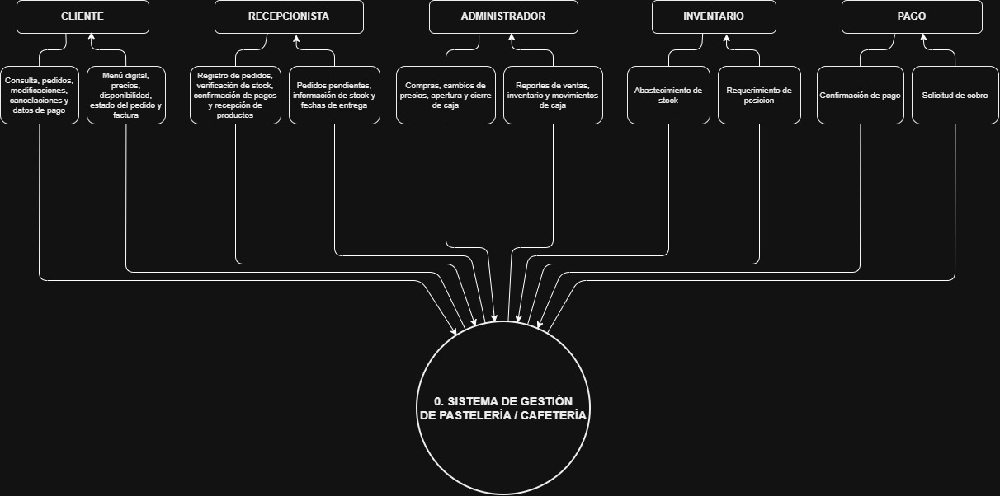
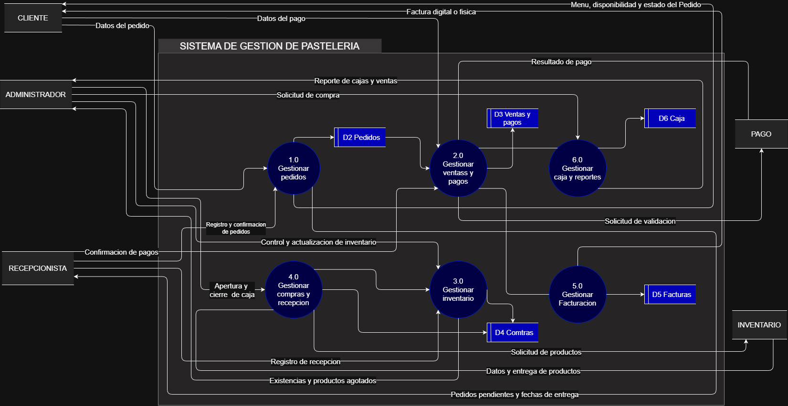
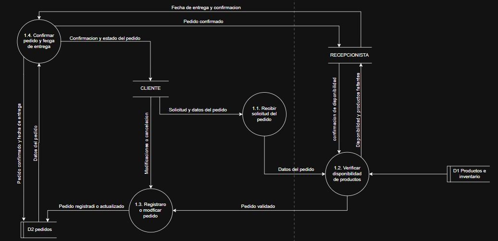
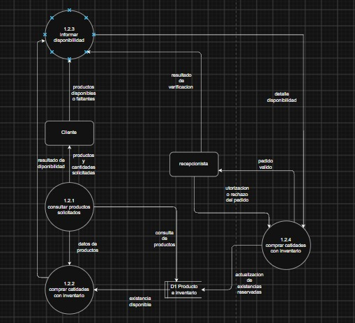

Pastelería Milo
Plataforma de presentación del proyecto del sistema.
Bienvenido al Sistema
Utiliza el menú lateral izquierdo para navegar por cada una de las fases del informe de la pastelería.
Portada
Sistema de Información para Pastelería Milo
Tema: Automatización y Control de Pedidos
Integrantes: [Nombres del grupo]
Estu. Juan Pablo Camacho Flores CI: 12862284
Introducción y Antecedentes
Introducción
La transformación digital y la automatización de procesos operativos pueden contribuir a mejorar la organización y el funcionamiento de las micro y pequeñas empresas. En el sector de cafeterías y pastelerías, la organización de las ventas, la disponibilidad de información sobre los productos y la atención al cliente son aspectos relevantes para el desarrollo del negocio. El presente informe expone el proceso de análisis y diseño orientado al desarrollo de un Sistema de Gestión de Pedidos y Clientes adaptado a las necesidades de una cafetería y pastelería con tres meses de funcionamiento. A partir de la información recopilada mediante un cuestionario de 35 preguntas, se busca identificar la situación actual del establecimiento y definir una propuesta de sistema que facilite el registro de ventas, la consulta de productos y la organización de la información relacionada con pedidos y clientes.
Antecedentes
Actualmente, las actividades del negocio comprenden la recepción de los productos destinados a la venta, la atención a los clientes y la supervisión de los insumos necesarios para su funcionamiento. Para organizar estas actividades, se verifica la disponibilidad de los productos recibidos y se procura que no falten los insumos necesarios.
Gestión de ventas e ingresos y egresos:las ventas se registran diariamente en un libro físico. En el mismo se lleva el control de los ingresos y egresos del negocio.
Control de productos e inventario: los productos disponibles se registran diariamente mediante una lista y fotografías. Una vez por semana se identifican las necesidades de reposición y se realizan las compras correspondientes.
Registro de gastos: los gastos se anotan diariamente, mientras que la planificación de las compras se realiza semanalmente.
Planteamiento del Problema
Descripción del Problema
El negocio realiza el registro de sus ventas e información económica de forma manual en libros físicos, lo que dificulta el control de las operaciones y puede ocasionar errores o pérdida de información. Asimismo, el inventario se administra mediante listas y fotografías, revisando semanalmente los productos disponibles y las necesidades de reposición.
Por otra parte, se identifica la falta de un catálogo digital que permita a los clientes consultar los productos y sus precios, así como la necesidad de mejorar la presencia del negocio en redes sociales. Por ello, surge la necesidad de implementar un sistema que permita organizar y facilitar la gestión de ventas, inventario, pedidos y clientes.
Árbol de Problemas

Propósito del Estudio
Objetivo General
Diseñar y desarrollar un Sistema de Gestión de Pedidos y Clientes para la cafetería y pastelería, aplicando técnicas de análisis y diseño de sistemas, con el fin de organizar la información del negocio, facilitar la gestión de ventas y mejorar la consulta de productos y precios.
Objetivos Específicos
- Identificar y documentar las necesidades operativas del negocio mediante el análisis del cuestionario aplicado.
- Definir los requerimientos funcionales y no funcionales del sistema de acuerdo con las necesidades identificadas.
- Diseñar las interfaces para la consulta del catálogo y la gestión de ventas, inventario, pedidos y clientes.
- Proponer una estructura de datos que permita organizar la información de productos, ventas, inventario, pedidos y clientes, de acuerdo con el alcance acordado.
- Validar el funcionamiento y la facilidad de uso del sistema mediante pruebas con el personal del establecimiento.
Metodología de Investigación
Métodos y Alcances
Cuestionario: Se aplicaron 15 preguntas distribuidas en cinco bloques: información general del negocio, procesos actuales, identificación de necesidades, características deseadas del sistema y preguntas finales.
1. Información general del negocio
- ¿Cuál es la actividad principal del negocio?
Cafetería y pastelería.
- ¿Cuánto tiempo lleva funcionando?
3 meses.
- ¿Cuántas personas trabajan aquí?
Una persona de lunes a viernes y otra los fines de semana.
2. Procesos actuales
- ¿Cómo registran actualmente sus ventas?
Cada venta se registra diariamente en un libro físico.
- ¿Cómo controlan sus productos o inventario?
Mediante listas y fotografías diarias, realizando una revisión semanal para identificar los productos que necesitan reposición.
- ¿Cómo registran las compras y los gastos?
Las compras se realizan semanalmente y los gastos se registran diariamente.
3. Identificación de necesidades
- ¿Qué proceso del negocio les gustaría mejorar?
La visibilidad del negocio en redes sociales y la implementación de un menú virtual.
- ¿Qué información necesitan consultar con mayor frecuencia?
La cantidad disponible de productos y la reposición de bollería y pastelería.
- ¿Qué tareas les gustaría automatizar?
Los registros diarios de ventas y la implementación de un menú virtual.
4. Características deseadas del sistema
- ¿Qué funciones les gustaría que tuviera el sistema?
Un menú digital accesible mediante código QR y un sistema móvil para registrar ventas e inventario.
- ¿Quiénes utilizarían el sistema?
El propietario y el encargado de ventas.
- ¿Les gustaría consultar la información desde una computadora o un celular?
Principalmente desde un teléfono celular.
5. Preguntas finales
- ¿Qué beneficios esperan obtener con un nuevo sistema?
Consultar los registros desde cualquier lugar, controlar las necesidades de inventario y permitir que los clientes revisen el menú y sus precios sin acudir al establecimiento.
- ¿Estarían dispuestos a probar un sistema desarrollado para el negocio?
Sí.
- ¿Hay alguna otra necesidad o problema que consideran importante resolver?
Mejorar la visibilidad del negocio en redes sociales para atraer nuevos clientes.
Planificación de Actividades
Cronograma y Gantt

Guarda tu imagen como gantt.png en la carpeta img
Modelo Ambiental
Diagrama de Contexto

Modelo de Comportamiento
Diagrama de Flujo de Datos
Nivel 0

Nivel 1

Nivel 2

Diccionario de Datos
Estructura de Datos
El sistema de gestión de pastelería contará con una estructura de datos organizada para almacenar y administrar la información de los clientes, productos, pedidos, ventas, pagos, inventario, compras, facturación y caja.
Diccionario de Datos
| Entidad | Descripción | Datos principales |
|---|---|---|
| Cliente | Almacena información de los clientes. | ID, nombre, teléfono, correo. |
| Producto | Registra los productos disponibles para la venta. | ID, nombre, descripción, precio, categoría, estado. |
| Pedido | Registra los pedidos realizados por los clientes. | ID, cliente, fecha, estado, total. |
| Detalle del Pedido | Almacena los productos incluidos en cada pedido. | ID, pedido, producto, cantidad, subtotal. |
| Venta | Registra las ventas realizadas diariamente. | ID, usuario, fecha, total. |
| Pago | Almacena la información de los pagos realizados. | ID, venta, método de pago, monto, estado. |
| Inventario | Controla las cantidades disponibles de los productos. | ID, producto, cantidad disponible, stock mínimo. |
| Movimiento de Inventario | Registra las entradas y salidas de productos. | ID, producto, tipo, cantidad, fecha. |
| Proveedor | Almacena información de los proveedores. | ID, nombre, teléfono, dirección. |
| Compra | Registra las compras realizadas a proveedores. | ID, proveedor, fecha, total. |
| Factura | Almacena los datos de las facturas emitidas. | ID, venta, número, fecha, monto. |
| Caja | Controla las aperturas y cierres de caja. | ID, usuario, fecha de apertura, fecha de cierre, saldo. |
| Usuario | Gestiona los accesos al sistema. | ID, nombre, usuario, contraseña, rol. |
Organización de la información
Las entidades estarán relacionadas entre sí para garantizar la integridad de la información. De esta manera, los pedidos estarán vinculados con sus clientes y productos, las ventas con sus respectivos pagos y las compras con el inventario. Esto permitirá mantener un control organizado de las operaciones de la pastelería.
Casos de Uso
Diagrama de Casos de Uso

Diagrama de Clases
Clases del Sistema

Diagramas de Secuencia
Secuencia y Actividades

Videos del Proyecto
Exposición Estructurado
Inserta tu iframe de YouTube aquí
Exposición OO
Inserta tu iframe de YouTube aquí
Contactos
Equipo de Desarrolladores
Pastelería Milo - 2026